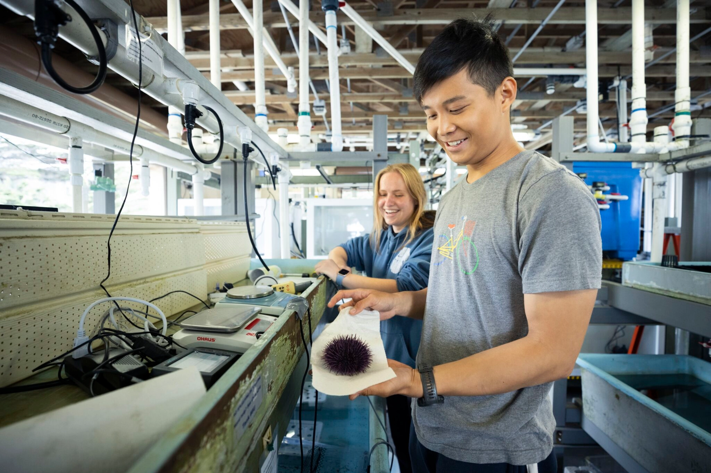

Our Campus
Student life

One of the world's leading research and teaching institutions. Catalyzing discovery, accelerating solutions, sustaining life on Earth, and preparing ...
Admission OpenWe are offering the three best courses for the students of the Standford University
computer science courses aim to provide students with the necessary knowledge and abilities to help them build a professional career with their bachelor’s or master’s program. In 1965 the university started a system where students specialize in programming, artificial intelligence, algorithms, network security, and more. It is also one of the most preferred courses in the university, where students have switched from other courses to computer science. Students get excellent career opportunities, and they can work as web developers, software engineers, IT specialists, product managers, and data scientists.
Among several Stanford university courses, human biology is one of the most popular courses in life sciences. It teaches students to understand humans from different perspectives, such as biological, behavioral, social, and cultural. There are some of the best laboratories and a library with a variety of books and journals to provide a better learning environment. Also, there are opportunities for students to indulge in various research projects, promoted through the senior synthesis program- Research Exploration (HB-REX) and honors thesis. Students are assigned advisors before starting the undergraduate major, who help them make a detailed study plan based on several factors.
One of the various courses offered at Stanford university is Electrical engineering that most students choose to pursue. The curriculum of this course consists of a diverse range of areas: computer hardware, circuits, bioelectronics, signal processing, electromagnetics, and more. The electrical engineering undergraduate program is divided into three disciplinary areas:
Facilities provided for the students of the Standford University.
The objective of the Canteen and meal service is to protect by reducing the risk of foodborne illness, with proper sanitary conditions.
The college is having a huge indoor auditorium with a professionally-deployed acoustic system and a seating capacity of about 200 people.
hostel consists of a separate mess, administrative office, warden quarter. In addition to well furnished rooms.